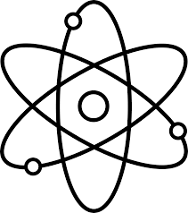
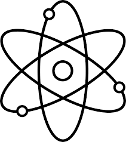

Maths
Maths is probably the hardest of the lessons I have taken. I chose it as it is a very good supporting subject to both physics and computer science and I enjoy being challenged by new problems and learning how to solve them in different ways. We are studying the C1, C2 and D1 modules in the first year of our course and C3, C4 and s1 for our second year. As I wish to study computer science at university my maths result is going to be very important and I’m aiming for an A*! So far my favourite module has been D1 as many of the problems that we get are similar to computer algorithms or have nice logical solutions.
Maths is probably the hardest of the lessons I have taken. I chose it as it is a very good supporting subject to both physics and computer science and I enjoy being challenged by new problems and learning how to solve them in different ways. We are studying the C1, C2 and D1 modules in the first year of our course and C3, C4 and s1 for our second year. As I wish to study computer science at university my maths result is going to be very important and I’m aiming for an A*! So far my favourite module has been D1 as many of the problems that we get are similar to computer algorithms or have nice logical solutions.
Physics
Physics for me is a very interesting lesson as I get to learn about how thing work, move, transfer energy and much more. This intrigues me as I like to understand what is going on around me or at least to be able to make a somewhat logical theory! I chose physics for that very reason I’m inquisitive! We learn about a veriety of topicas vairying from waves to electricity and many more. my favourite topic so far has been electricity as learning about circuits and appliences is really enjoyable and I get to picture what might be going on inside different things.

Physics for me is a very interesting lesson as I get to learn about how thing work, move, transfer energy and much more. This intrigues me as I like to understand what is going on around me or at least to be able to make a somewhat logical theory! I chose physics for that very reason I’m inquisitive! We learn about a veriety of topicas vairying from waves to electricity and many more. my favourite topic so far has been electricity as learning about circuits and appliences is really enjoyable and I get to picture what might be going on inside different things.

Computer science
Computer science is by far my favourite lesson that I have chosen to study. In fact, I chose my college as the provided a computer science course. I spend a lot of time on my computer and so learning about how they work, connect, are built and coded are all things that interest me greatly. Although I enjoy the theory side, I much prefer the coding that we do, as it allows me to make logical solutions to problems or create simple applications! I currently understand HTML, CSS some basic Javascript and Visual basic to a decent level. However, I'm currently looking to teach myself Java as I'm certain it will be very useful in the coming years. Computer science is by far my favourite lesson that I have chosen to study. In fact I chose my college as the provided a computer science course. I spend a lot of time on my computer and so learning about how they work, connect, are built and coded are all things that interest me greatly. Although I enjoy the theory side, I much prefer the coding that we do, as it allows me to make logical solutions to problems or create simple applications!

Computer science is by far my favourite lesson that I have chosen to study. In fact, I chose my college as the provided a computer science course. I spend a lot of time on my computer and so learning about how they work, connect, are built and coded are all things that interest me greatly. Although I enjoy the theory side, I much prefer the coding that we do, as it allows me to make logical solutions to problems or create simple applications! I currently understand HTML, CSS some basic Javascript and Visual basic to a decent level. However, I'm currently looking to teach myself Java as I'm certain it will be very useful in the coming years. Computer science is by far my favourite lesson that I have chosen to study. In fact I chose my college as the provided a computer science course. I spend a lot of time on my computer and so learning about how they work, connect, are built and coded are all things that interest me greatly. Although I enjoy the theory side, I much prefer the coding that we do, as it allows me to make logical solutions to problems or create simple applications!